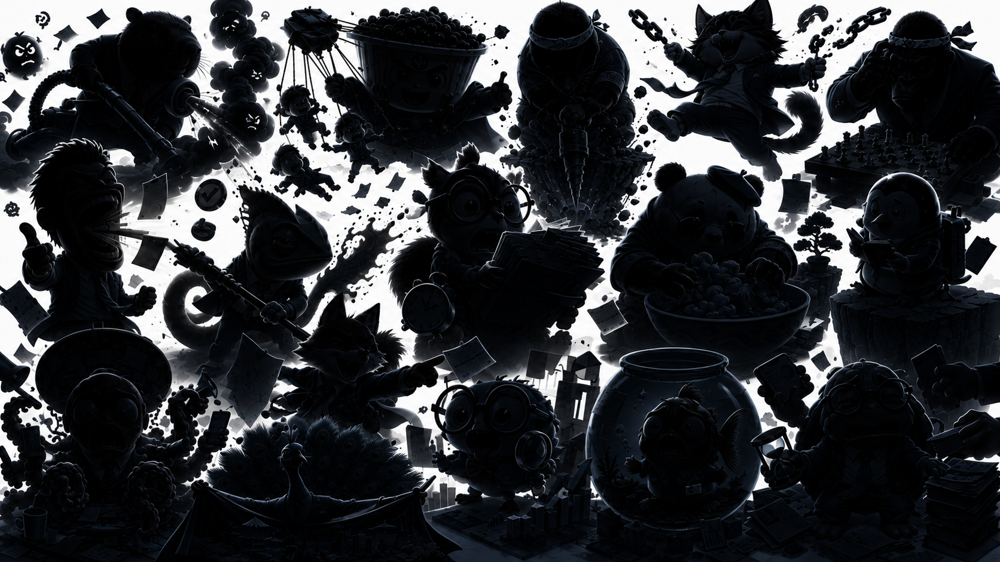

CAREER DIAGNOSIS — YOUR RESULT
タイプ解説
メイン適性スコア
回答から算出した職業適性の上位8項目です。
向いている仕事
向いている環境
向いていない環境
次に確認すべきこと
診断結果はどのくらい当てはまりましたか？
1=全く当てはまらない 5=とても当てはまる
※この診断は参考情報です。転職・退職の意思決定は十分な情報収集のうえ、ご自身でご判断ください。給付金等の受給には各種条件があり、受給を保証するものではありません。

CAREER DIAGNOSIS
35問で、あなたの職業タイプ・向いている環境・今の職場に削られている理由を診断します。結果は少し辛口。でも、次に取るべき行動までわかります。
OPTIONAL — スキップ可能
回答は統計目的にのみ使用されます。スキップしても診断できます。
あなたの年代は？
現在の雇用形態は？
業界は？
CAREER DIAGNOSIS — YOUR RESULT
回答から算出した職業適性の上位8項目です。
診断結果はどのくらい当てはまりましたか？
1=全く当てはまらない 5=とても当てはまる
※この診断は参考情報です。転職・退職の意思決定は十分な情報収集のうえ、ご自身でご判断ください。給付金等の受給には各種条件があり、受給を保証するものではありません。
退職前のお金チェック
働き方を変える前に、退職後の収入・手続き・確認事項を整理しておきましょう。回答内容をもとに、確認すべきポイントを案内します。
Q1
退職前のお金チェック — 確認事項
各項目はあくまで参考情報です。正確な内容はハローワーク等の公的機関でご確認ください。
当サイトは、失業給付の受給可否・金額・開始時期を保証するものではありません。最終的な判断はハローワークが行います。当サイトは申請代理・書類作成代理・法律相談ではなく、退職前後の確認事項を整理するための情報提供サービスです。事実と異なる申告や不正受給を助長するものではありません。